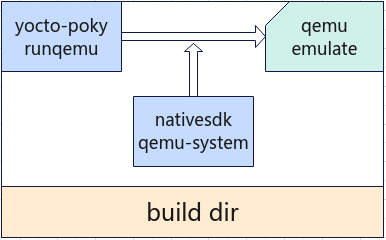
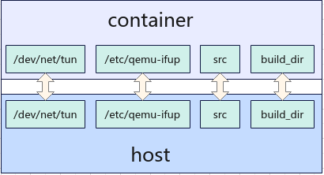

qemu仿真命令-runqemu¶
该命令是对poky自带的runqemu做了外层包装，配合yocto-meta-openeuler构建qemu镜像默认添加了qemu仿真功能，实现在当前构建目录下的qemu仿真。该功能是在openEuler构建容器下实现的，即所应用的qemu-system工具来自于构建容器中nativesdk下的qemu-system，调用逻辑图如下所示：
runqemu 的运作离不开 poky 环境的初始化，其构建目标须生成 qemuboot.conf 文件。runqemu 会依据此文件参数启动，若文件不存在，则会报错，显示”qemuboot.conf not exists”等提示。yocto-meta-openeuler 在”meta-openeuler/recipes-core/images/qemu.inc”中默认添加了’IMAGE_CLASSES += “qemuboot”’，确保构建 qemu 镜像时会自动生成 qemuboot.conf。 然而，鉴于 CPU 架构的差异，不同架构的 qemuboot 配置也各有千秋。openEuler 针对支持的四个架构提供了特定配置，这些配置文件位于”meta-openeuler/conf/machine”目录下，分别为 generic-x86-64.conf、qemu-aarch64.conf、qemu-arm.conf 和 qemu-riscv64.conf。每个文件中，”# qemuboot options”部分即为 qemuboot 的相关配置。用户可根据实际开发需求进行定制化修改，但请注意，每次修改后须重新进行构建。
Note
oebuild runqemu仿真的命令完全和yocto-poky的runqemu完全一致，没有任何不同，因此如果想要详细了解runqemu的命令参数可以参考poky给出的官方文档有关qemu仿真的部分章节，另外，针对大部分的场景属于无图形化启动，因此如果要无图形化启动请添加nographic命令参数，如下： oebuild runqemu nographic
runqemu的运行是在容器中进行的，但是为了和主机无缝衔接，因此关键文件和容器之间做了映射，如下图所示：
从图中可以看出，容器和主机之间对四个目录或文件做了映射，现讲解各文件或目录的作用：
/dev/net/tun：容器启动必备参数，如果有网络相关的设置该文件不可少
/etc/qemu-ifup：openEuler官方给出的qemu启动网卡配置文件
/src：openEuler源码目录，因为runqemu是对poky的runqemu的外层包装，因此需要和bitbake一样来做环境初始化
/build_dir：openEuler构建目录，runqemu需要运行在构建目录环境下
Note
在运行runqemu时为了使能网络，因此oebuild会检查/etc/qemu-ifup网卡脚本，整体的qemu镜像网络使能是参考openEuler给出的qemu运行指导文档来做的，因此如果不存在则会提示去创建该脚本，并且会给出相关的内容，需要注意的是该配置文件的操作需要root权限，并需要赋予普通用户可执行权限，并且启动的容器是以特权模式启动，即添加了–privileged参数
命令的使用范例如下：
oebuild runqemu